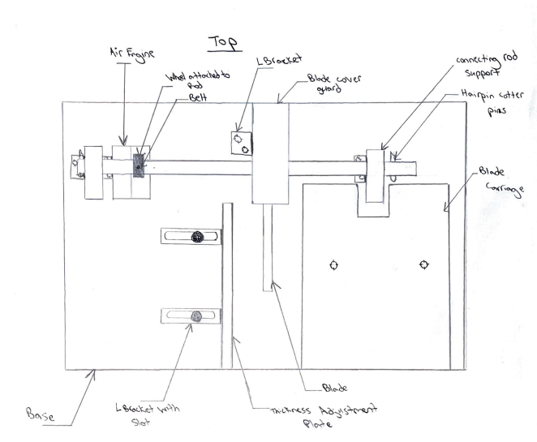
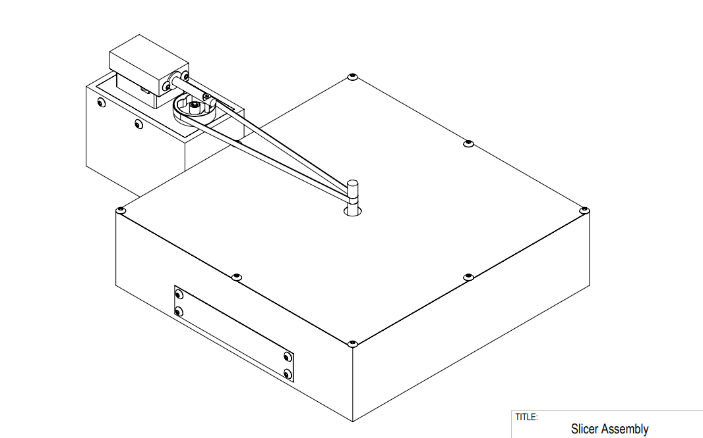
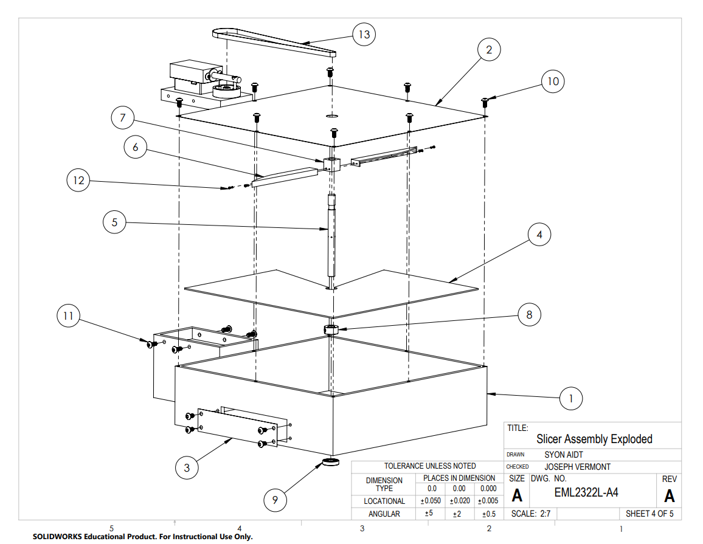
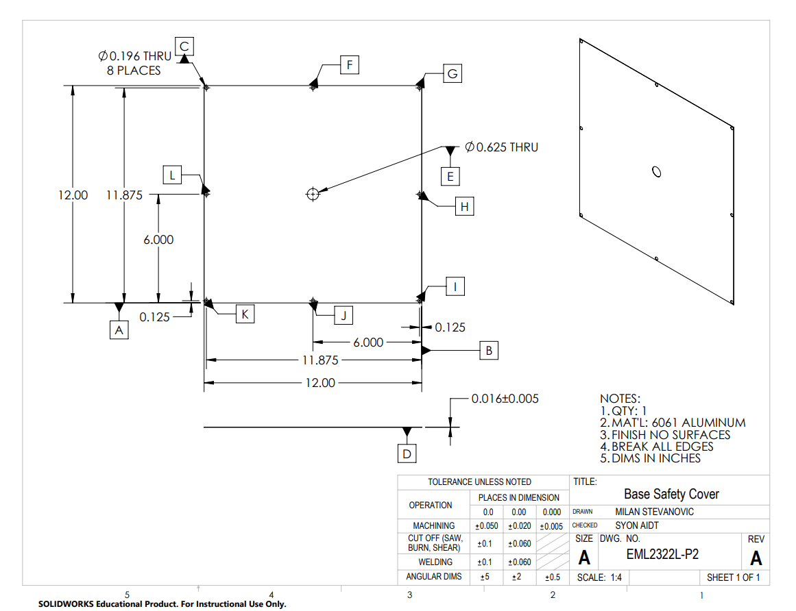
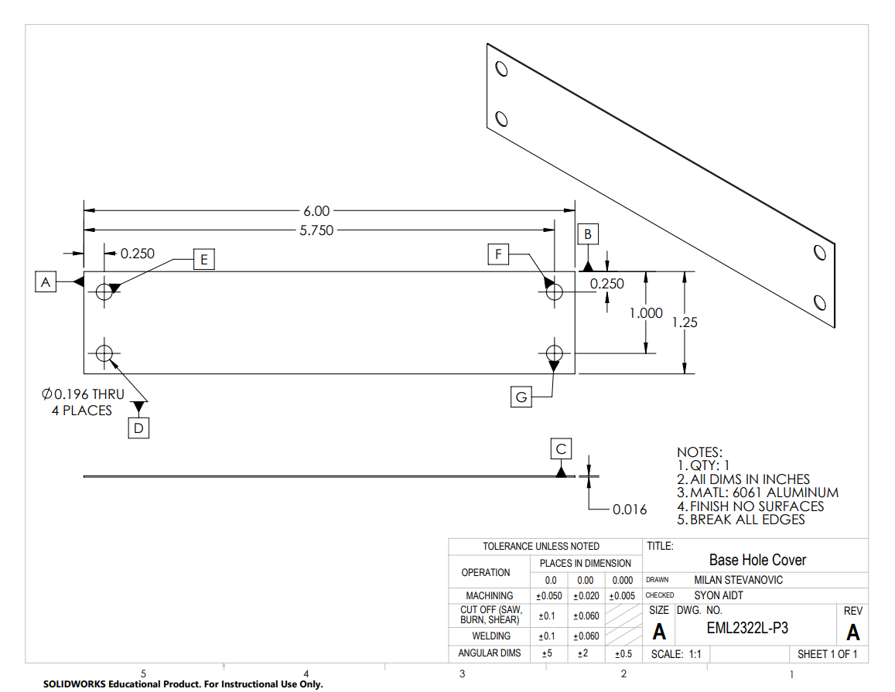

Air Engine Powered Food Slicer
A compressed-air-powered food slicer, designed from scratch for a team design competition and then fully modeled and documented in SolidWorks for manufacturing. My concept came in under budget at $92.10 and offered the widest range of slice-thickness settings of the four team designs.
The Challenge
In EML2322L Design and Manufacturing Lab at UF, each of the four members of my team independently designed a food slicer powered entirely by a dual-action two-stroke compressed-air piston engine, with no electric motor. Each design had to use food-safe materials, have a lockable adjustable slice thickness, and stay under a $100 budget. We then scored every concept in a weighted decision matrix across manufacturing time, cost, ease of assembly, thickness range, and safety.
My Design
My concept transferred rotation from the engine's flywheel to a shaft through a flat belt and drive wheel, driving a rotating blade. Slice thickness was set with long slotted L-brackets, which gave the largest number of adjustment options of any concept on the team. A cover guard sat over the blade.
By the Numbers
- Cost: $92.10, under the $100 cap
- Estimated build time: 196 minutes
- Slice thickness range: highest of the four team designs
- Components: 54 total, including fasteners and off-the-shelf hardware
Design Trade-offs
Keeping the cutting area simple helped cost and adjustability, but left 10.27 inches of blade arc exposed. Safety is the first thing I'd improve in a second iteration, with a fully enclosed blade, and I'd cut the fastener count to bring down cost and assembly time.
Design to Documentation
After the team selected a design, we modeled every part and the full assembly in SolidWorks. I personally modeled the base safety cover and base hole cover. The package included part drawings, exploded views, Manufacturing Inspection Records for every part, and a manufacturing process outline showing how each part would be made.
What I Learned
The decision matrix put numbers on trade-offs I'd only felt intuitively, like how a single weak category can pull down an otherwise strong design. Documenting a process for every part also changed how I design, since I now think about how something will be made while I'm still modeling it.
Gallery
Click any image to view it full size.


Initial concept sketch


Team design: SolidWorks assembly


Team design: exploded view


Base safety cover (modeled by me)


Base hole cover (modeled by me)
Full Documentation
For the complete engineering analysis, decision matrix, drawings, and inspection records, view the full design reports below. Note: these were collaborative team reports.